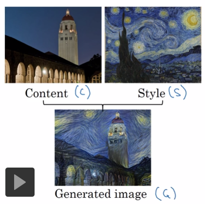
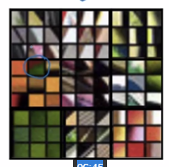
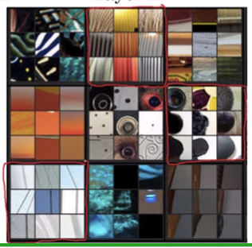
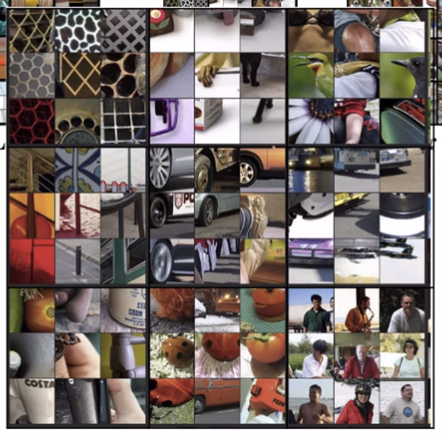
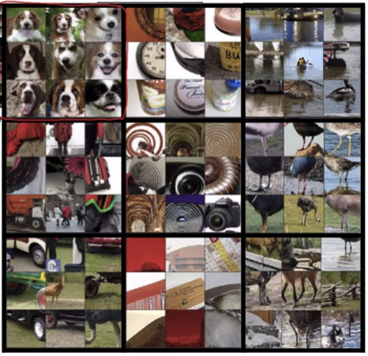
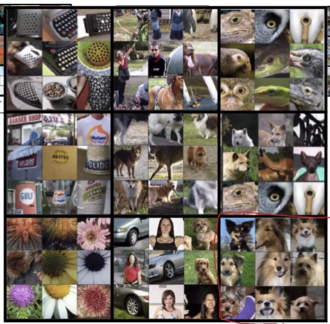

1. DL Network是怎么学习的
Zeilier and Fergus., 2013. Visiualizing and understanding convolutional networks
分析一个已经训练好的NN：
- 选择layer 1的Unit，观察怎样的输入让这些unit最“兴奋”，得到这样9张图。

- 用同样的方法观察其它layer，每个layer得到这样一些图：




结论：靠后的layer的unit would see a larger region of the image。
2. 网络迁移的算法
Gatvs. et. al., 2015. A newral algorithm of artistic style
这篇论文不难
2.1. 定义
原图像为Content，简称C
风格图像为Style，简称S
生成图像为Generated，简称G
2.2. 过程
- 随机初始化G
- 定义代价函数J（G）
- 使用梯度下降法最小化J（G）
G=G−∂G∂J(G)
直接更新图像G的像素值。
3. 定义代价函数J（G）
代价函数J（G）由两部分组成：G与C的相似度、G与S的相似度
J(G)=JC(C,G)+JS(S,G)
3.1. JCJ_CJC代价函数
（1）使用某个pre-trained ConvNet，例如VCG
（2）选择网络中的某一层hidden layer来计算content cost，假设使用第l层
- l太小，则生成图像太接近原图像
- l太大，则生成图像与原图像差太多
因此要合理地选择l，通常选择网络的中间层。
（3）定义符号
a[l](C)和a[l](G)分别为C和G在第l层的激活值(a，也可写作h)
（4）定义代价函数
认为：如果a[l](C)和a[l](G)接近，则图像C和G接近
因此：
JC(C,G)=21∣∣a[l](C)−a[l](G)∣∣2
3.2. JSJ_SJS代价函数
3.2.1. 什么是图像的风格
定义一个图像的style为:correlation between activationas accross channels，即某个Conv层不同channel之间的相关性。
怎样评价两个通道的correlation？
例如这张图，假设图像在某一层上具有这样一些channel。大格子代表不同的channel，小格子代表同一channel关注的不同特征。当某个通道的filter关注某种样式时，另一通道一定关注另一种某个样式，则认为两个通道是high correlation的。相关度correlation表示两个channel同时出现的可能性。
如果一个通道filter关注的样式和另一个通道没有什么关系，则认为是low correlation的。
Jstyle定义如下：
已知S的每个channel的filter，评价G中how often出现同样的filter组合。
3.2.2. 定义符号
ai,j,k[l]：图像S中H=i, W=j, C=k的点处的a。
G[l],(S)：图像S的第l层的gram matrix/style matrix，大小为nc[l]×nc[l]
Gk1,k2[l],(S)：图像S的第l层通道k1与通道k2的相关性。
gram matrix是线性代数中的术语。
3.2.3. 定义代价函数
Gk1k2l,sGk1k2l,GJstylel(S,G)Jstyle(S,G)J(G)======i∑j∑aijk1ls∗aijk2lsi∑j∑aijk1lG∗aijk2lG2nHlnWlnCl1∣∣Gls−GlG∣∣F2(2nHlnWlnCl)1k∑k′∑(Gk1k2l,s−Gk1k2l,G)l∑λlJstylel(S,G)αJcontent(C,G)+βJstyle(S,G)分母用于Normalize
λ是超参数。
内容代价函数只算一层，风格代价函数要遍历所有层。